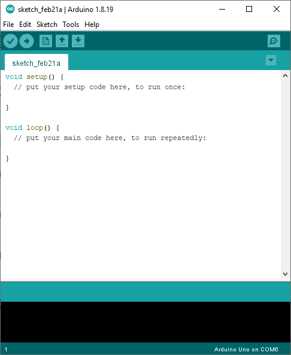

Section 1: Leg Assembly and Calibration
Slides
F for fullscreen · O for overview
Arduino IDE

LED on the robot


Libraries and Initialisation
- This is the core of Arduino Library which provides the basic commands for Arduino Programming
- Initialize the
ledpinas output - Allows for serial communication using arbitrary digital pins (pins 6 and 7 are used for RX and TX in this case).
- Otto Lib+rary
- This is Otto !
Verify and upload the program to the Arduino Uno (the microcontroller of the robot)
Connecting the robot to the computer
Verify COM port

Verify and upload the program
You can use the "verify" button even when you are not connected to a microcontroller to check your code.
After the code is uploaded, you should see the LED blinking at a rate of 1 second of light on and 1 second of light off.
Bring it further
- How do we make the LED blinking at a faster or slower speed?
-
Can we blink the LED with the following pattern?
3 sec on → 1 sec off → 2 sec on → 0.5 sec off → repeat